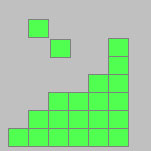
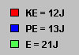

|
|
|
|
Click on a number to view its explanation.

The white rectangular area with the dark boundary represents a system whose energy we want to observe. The red and blue blocks represent 1-J portions of kinetic energy, KE, and potential energy, PE, respectively, of the system.
By double-clicking a red (blue) block one can change it into a blue (red) block, simulating a change of kinetic into potential energy or vice versa.


The grey area outside the system represents the system's environment. The green blocks represent the energy of the environment. This energy is denoted by E here. It can take many forms, which are left unspecified.
One can click on a green block of energy and drag it into the system, thus changing it into either kinetic or potential system energy. Similarly, one can move a block of system energy out of the system into the environment, thus changing it into energy of the environment.

The applet keeps a tally of the numbers of red, blue, and green blocks in terms of the energies represented by the blocks.
The applet maintains a record of the total number of all blocks (energies). The total number of blocks (total energy) stays the same during all changes.